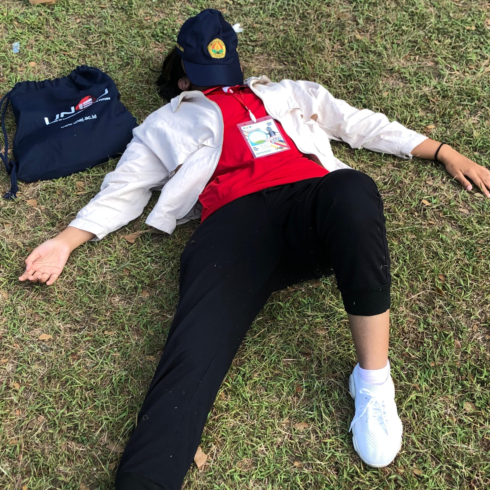
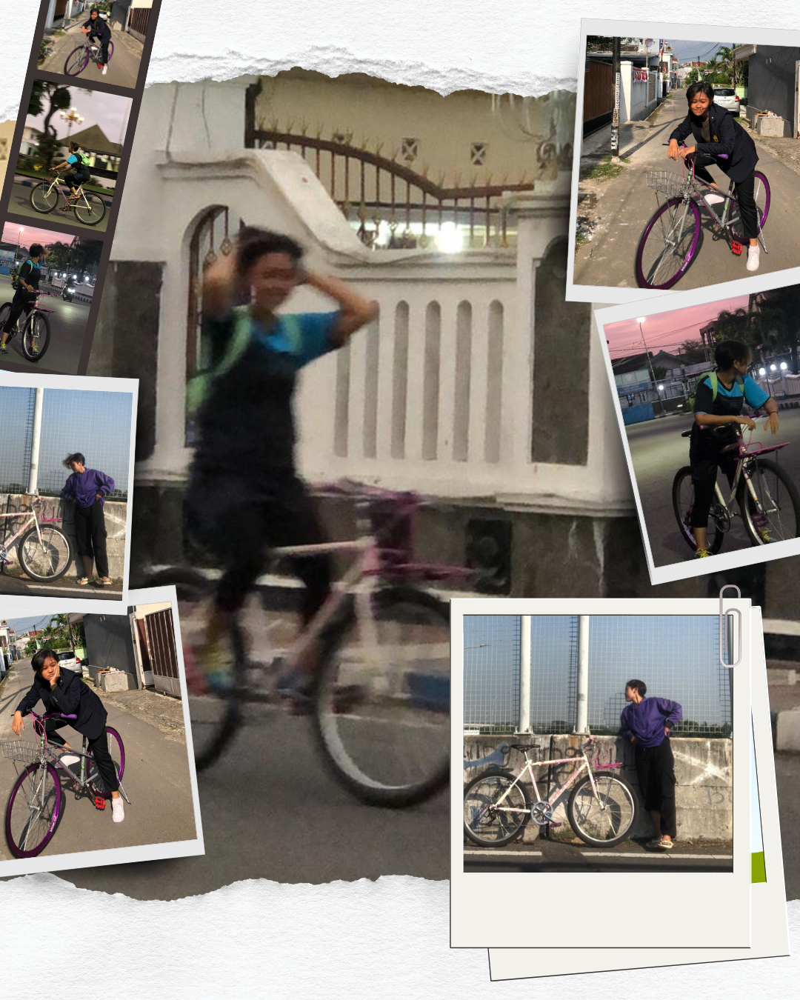
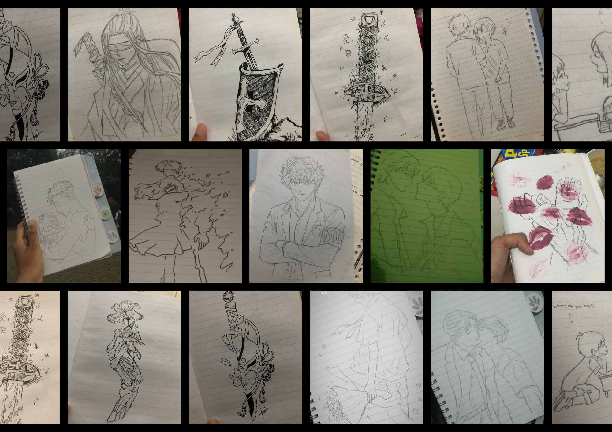

 <!-- HOME PAGE -->
    <div id="home" class="page active">
        <div class="container">
            <div class="content-wrapper">
                <section class="hero glass">
                    <div class="hero-image">
                        
                    </div>
                    <div class="hero-content">
                        <h1>Erlita Putri Rahmania</h1>
                        <p>Hello everyone, my name is Erlita Putri Rahmania (252410101068) student of jember university from the faculty of computer science, Information Systems study program.</p>
                       
                    </div>
                </section>

                <section class="features">
                    <div class="feature-card glass " onclick="openPopup('popuphiking')">
                        <div class="feature-icon">🏞️</div>
                        <h3>Hiking</h3>
                        <p>I really like walking in nature, such as hiking mountains and visiting waterfalls with challenging trails. It's the best way to forget some of your problems.</p>
                    </div>
                     <div id="popuphiking" class="popup">
                        <div class="popup-content">
                            
                            <button onclick="closePopup('popuphiking')">Close</button>
                        </div>
                    </div>

                     <div class="feature-card glass " onclick="openPopup('popupcycling')">
                        <div class="feature-icon">🚴‍♀️</div>
                        <h3>Cycling</h3>
                        <p>The reason cycling has become one of my hobbies is because it is good for my health and, most importantly, it is currently trending among Gen Z.</p>
                    </div>
                     <div id="popupcycling" class="popup">
                        <div class="popup-content">
                            
                            <button onclick="closePopup('popupcycling')">Close</button>
                        </div>
                    </div>

                     <div class="feature-card glass " onclick="openPopup('popupdrawing')">
                        <div class="feature-icon">🎨</div>
                        <h3>Drawing</h3>
                        <p>Actually, drawing is not my hobby, but it is one of the activities I use to express my feelings.</p>
                    </div>
                     <div id="popupdrawing" class="popup">
                        <div class="popup-content">
                            
                            <button onclick="closePopup('popupcycling')">Close</button>
                        </div>
                    </div>
                    

                    <div class="feature-card glass">
                        <div class="feature-icon">📸</div>
                        <h3>Photographing</h3>
                        <p>I like photography because we can capture a moment and remember it. I often serve as the documentation team at school events.</p>
                    </div>

                    <div class="feature-card glass">
                        <div class="feature-icon">🌴</div>
                        <h3>Picnic</h3>
                        <p>Picnics are my favorite activity for spending time with family or friends who love nature but don't want to get tired on the road.</p>
                    </div>

                    <div class="feature-card glass">
                        <div class="feature-icon">🏃</div>
                        <h3>Jogging</h3>
                        <p>Actually, jogging is just an exercise I do because of FOMO, and because I have to follow my best friend's hobby to keep her company.</p>
                    </div>
                </section>
            </div>
        </div>
    </div>